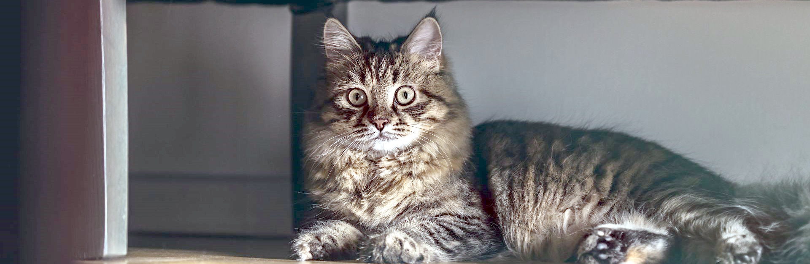
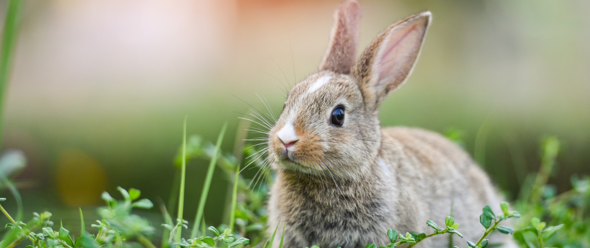
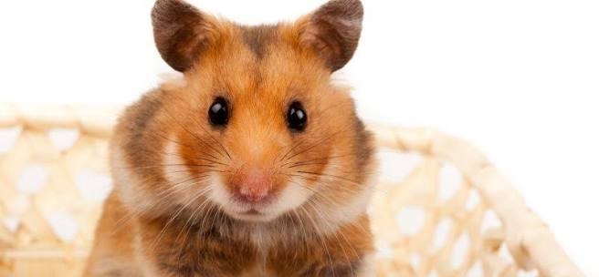
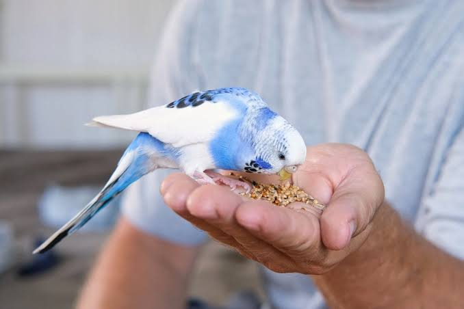
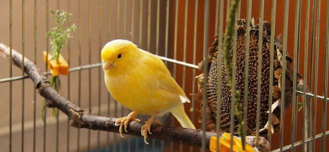

Как воспитать щенка: первые шаги
Щенок появился в доме - что делать? Рассказываем о приучении к туалету, социаллизации и первых командах. Воспитание начинается с первого дня! Читать далее →
Советы по уходу и воспитанию
Узнайте, как правильно ухаживать за своими любимцами и сделать их жизнь лучше
Щенок появился в доме - что делать? Рассказываем о приучении к туалету, социаллизации и первых командах. Воспитание начинается с первого дня! Читать далее →

Кошки проводят во сне до 16 часов в сутки. Узнайте, как устроен их режим сна, когда стоит беспокоится и как создавать комфортные условия для отдыха.Читать далее →

Декоративные кролики - отличные питомцы для квартиры. Разбираем особенности ухода, питания и обустройства клетки,чтобы ваш пушистик был здоров.Читать далее →

Кошки общаются с нами не только с помощью мяукания. Разбираемся, что означают движение хвоста, прижатые уши, мурлыканье и почему кошка иногда "топчет" вас лапками. Читать далее →
Взять взрослую собаку из приюта — благородный и ответственный шаг. Рассказываем, как подготовить дом к новому другу, пережить первые дни адаптации без стресса и мягко завоевать доверие преданного животного.Читать далее →

Сирийские хомяки — невероятно популярные и забавные домашние питомцы. Узнайте, какого размера должна быть клетка, почему им жизненно необходимо беговое колесо и как составить сбалансированный рацион для грызуна.Читать далее →

Яркие и общительные волнистые попугайчики способны стать отличными компаньонами. Разбираем, как правильно обустроить клетку, защитить птицу от сквозняков и какими методами можно научить вашего пернатого любимца говорить первые слова. Читать далее →

Мелодичное пение канарейки способно украсить любой дом. Мы собрали главные правила ухода за этими хрупкими птицами: от выбора правильной формы клетки до подбора зерносмесей и минеральных подкормок для сохранения красоты оперения.Читать далее →